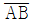
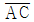
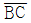
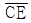
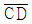
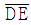
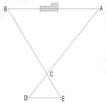
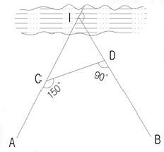
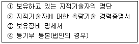

지적산업기사 (2010-05-09 기출문제)
1과목: 지적측량
1. 평판측량에 따른 세부측량을 교회법으로 실시한 결과 시오 삼각형이 생긴 경우 내접원의 지름이 최대 얼마이하인 때에는 그 중심점을 점의 위치로 하는가?
- 1mm
- 2mm
- 3mm
- 4mm
(정답률: 45%)

2. 축척이 1/500인 도면 1매의 면적이 1,000m2이라면, 도면의 축척을 1/1,000으로 하였을 때 도면1매의 면적은 얼마인가?
- 2,000m2
- 3,000m2
- 4,000m2
- 5,000m2
(정답률: 58%)
3. 도선법에 따른 지적도근점의 각도를 방위각법으로 관측한 결과 폐색오차가 -5분 이었을 때 6번째 변에 배부하여야 할 오차의 배분량은? (단, 2등도선이며 폐색변을 포함한 변의 수는 15개이다.)
- +1분
- +2분
- +3분
- +4분
(정답률: 45%)
4. 평판측량방법에 따른 세부측량을 도선법으로 하는 경우 도선의 변은 최대 몇 개 이하로 하여야 하는가?
- 20개
- 25개
- 30개
- 35개
(정답률: 75%)
5. 평판측량방법에 있어서 도상에 영향을 미치지 아니하는 지상거리의 축척별 허용범위 기준으로 옳은 것은?
- 축척분모의
 mm
mm - 축척분모의
 mm
mm - 축척분모의
 mm
mm - 축척분모의
 mm
mm
(정답률: 80%)
6. 다음 중 경위의측량방법에 따른 세부측량의 기준으로 옳지 않은 것은?
- 도선법 또는 방사법에 따른다.
- 수평각의 관측은 1대회의 방향관측법이나 2배각의 배각법에 따른다.
- 관측은 20초독이상의 경위의를 사용한다.
- 1방향에 대한 수평각의 측각공차는 40초 이내로 한다.
(정답률: 42%)
7. 측판측량방법으로 거리를 측정하는 경우 도곽선의 신축량이 최소 얼마 이상일 때에 이를 보전해 주어야 하는가?
- 0.1mm
- 0.3mm
- 0.5mm
- 0.7mm
(정답률: 53%)
8. 다음 그림과 같이 A번과 B점 사이에 장애물이 있을 때,

의 거리는 얼마인가? (단,
=170m,
=120m,
=26.5m,
=25m,
=30m 이며 임.)
- 102m
- 120m
- 204m
- 360m
(정답률: 70%)
9. 다음 중 지적도근점측량의 도선구분이 옳은 것은?
- 1등 도선은 가ㆍ나ㆍ다 순으로 표기하고, 2등 도선은 ㄱㆍㄴㆍㄷ 순으로 표기한다.
- 1등 도선은 가ㆍ나ㆍ다 순으로 표기하고, 2등 도선은 (1)ㆍ(2)ㆍ(3) 순으로 표기한다.
- 1등 도선은 ㄱㆍㄴㆍㄷ 순으로 표기하고, 2등 도선은 가ㆍ나ㆍ다 순으로 표기한다.
- 1등 도선은 (1)ㆍ(2)ㆍ(3) 순으로 표기하고, 2등 도선은 가ㆍ나ㆍ다 순으로 표기한다.
(정답률: 73%)
10. 측선의 방위각이 120°일 때 다음 중 그 측선의 방위 표시로 옳은 것은?
- S 60°E
- N 60°E
- N 60°W
- S 60°W
(정답률: 60%)
11. 다음 중 지적확정측량을 하는 경우 필지별 경계점을 측정하기 위한 기준점에 해당하지 않는 것은?
- 필계점
- 삼각점
- 지적삼각점
- 지적삼각보조점
(정답률: 81%)
12. 평판측량방법에 따라 조준의를 사용하여 측정한 경사거리가 100m 이고, 경사분획이 15일 때 수평거리는 얼마인가?
- 95.1m
- 98.9m
- 103.5m
- 120.7m
(정답률: 61%)
13. 다음 중 일람도의 도엽번호를 제도하는 크기 기준은 얼마인가?
- 1mm
- 3mm
- 4mm
- 5mm
(정답률: 45%)
14. 경위의측량방법에 따른 지적삼각보조점의 관측과 계산에서 1방향각의 측각공차는 최대 얼마 이내이어야 하는가?
- 20초이내
- 30초이내
- 40초이내
- 50초이내
(정답률: 65%)
15. 다음 중 지적측량을 하여야 하는 경우로 옳지 않은 것은?
- 지적공부를 복구 하는 경우
- 지적측량성과를 검사하는 경우
- 경계점을 지상에 복원하는 경우
- 지적측량기준점 표지를 설치하는 경우
(정답률: 29%)
16. 다음 중 지적삼각보조점측량의 기준에 관한 설명으로 옳은 것은?
- 지적삼각보조점은 삼각망 또는 교점다각망으로 구성하여야 한다.
- 교회법으로 지적삼각보조점측량을 할 때에 삼각형의 각 내각은 30°이상 120°이하로 한다.
- 다각망도선법으로 지적삼각보조점측량을 할 때에는 1도선의 거리를 5km 이하로 한다.
- 영구표지를 설치하는 경우에는 시ㆍ도별로 일련번호를 부여한다.
(정답률: 63%)
17. 경계점좌표등록부 시행지역에서 지적도근점의 측량성과와 검사성과의 연결교차는 허용범위가 얼마 이내일 때 측량성과로 결정할 수 있는가?
- 0.10m 이내
- 0.15m 이내
- 0.20m 이내
- 0.25m 이내
(정답률: 38%)
18. 다음 중 최소제곱법에 의하여 소거할 수 있는 오차는?
- 정오차
- 기계오차
- 착오
- 우연오차
(정답률: 70%)
19. 다음 중 지적공부를 정리할 때에 검은색으로 제도하여야 하는 것은?
- 경계선과 말소선
- 일람도의 철도용지
- 일람도의 도로
- 도곽선 및 도곽선 수치
(정답률: 74%)
20. 다음 중 지적소관청이 지적삼각보조점성과표에 기록ㆍ관리하여야 하는 사항에 해당하는 것은?
- 표지의 재질
- 시준점의 명칭
- 빙위각 및 거리
- 자오선 수차
(정답률: 50%)
2과목: 응용측량
21. 간접수준측량으로 천장에 설치된 AB 측점간을 연직각 +5°로 관측하여 사거리가 50m, 후시(A점)의 관측값이 1.60m, 전시(B점)의 관측값이 1.50m이였다. AB의 고저차는?
- 3.55m
- 3.75m
- 4.26m
- 4.45m
(정답률: 44%)
22. 노선측량에서 곡선시점에 대한 접선길이(T.L)가 50m, 교각이 40°일 때 원곡선의 곡선길이는?
- 41.600m
- 95.9⑤m
- 102.578m
- 137.374m
(정답률: 34%)
23. 원곡선에서 교각 I=38°20′이고, 곡선반지름이 300m인 원곡선을 편각법으로 설치할 경우에 시단현의 편각은? (단, 노선의 기점으로부터 교점까지의 거리는 500m이고, 중심말뚝의 간격은 20m이다.)
- 0°12′15″
- 0°24′29″
- 1°00′15″
- 1°30′06″
(정답률: 43%)
24. 지형도를 활용하여 작성할 수 있는 자료와 가장 거리가 먼 것은?
- 등경사선의 관측
- 토지경계의 결정
- 성토범의늬 결정
- 유역면적의 계산
(정답률: 37%)
25. 지형측량을 하려면 기본삼각점만으로는 기준점이 부족하므로 삼각점을 기준으로 하여 지형측량에 필요한 측점을 설치하는데 이점을 무엇이라 하는가?
- 이기점
- 방향변환점
- 도근점
- 경사변환점
(정답률: 66%)
26. 건설현장 중 부지의 정지작업을 위한 토량산정 또는 저수지의 용량 등을 측정하는데 주로 사용되는 방법은?
- 영선법
- 음영법
- 채색법
- 등고선법
(정답률: 55%)
27. 앙공사진에서 수직사진은 경사각 몇 도 이내의 사진을 의미하는가?
- 3°이내
- 8°이내
- 7°이내
- 9°이내
(정답률: 54%)
28. 촬영고도 3,000m에서 촬영한 항공사진의 주점에서 2cm 떨어진 위치에 투영된 어느 산정(山頂)의 높이가 150m라면 이 산정의 사진에서의 변위량은?
- 6mm
- 9mm
- 12mm
- 15mm
(정답률: 25%)
29. 노선 중 완화 곡선을 넣는 장소는?
- 직선과 직선사이
- 원곡선과 직선사이
- 반향곡선과 원곡선사이
- 종단곡선과 직선사이
(정답률: 46%)
30. 축척 1 : 2,500, 등고선 간격 2mm, 경사 5%일 때 등고선간의 수평거리 L의 도상길이는?
- 1.4cm
- 1.6cm
- 1.8cm
- 2.0cm
(정답률: 42%)
31. 위성측량으로 지적삼각점을 설치하고자 할 때 가장 적합한 측량방법은?
- 실시간 이동상대측량(Real Time Kinematic Survey)
- 이동상대측량(Kinematic Survey)
- 정지상대측량(Static Survey)
- 방향관측법
(정답률: 72%)
32. GPS의 특징에 해당되지 않는 것은?
- 야간에도 관측이 가능하다.
- 날씨의 영향을 거의 받지 않는다.
- 고압선 등의 전파에 대한 영향을 받지 않는다.
- 측점간 시통에 무관하다.
(정답률: 65%)
33. 다음 중 사진지도의 특징에 대한 설명으로 잘못된 것은?
- 정량적 및 정성적 관측이 가능하다.
- 접근하기 어려운 대상물의 관측이 가능하다.
- 시간적 변화를 포함한 4차원측량이 가능하다.
- 행정경계, 지명, 건물명 등도 별도의 작업 없이 측량이 가능하다.
(정답률: 56%)
34. 사진면으로부터 얻어진 피사체의 정보를 해석하기 위한 사진판독요소만으로 짝지어진 것은?
- 색도, 지질, 크기
- 질감, 모양, 기상
- 형상, 길이, 수중
- 색조, 크기, 음영
(정답률: 74%)
35. 터널내 곡선설치방법으로 가장 적합한 것은?
- 현거법
- 편각현거법
- 전방교선법
- 중앙종거법
(정답률: 39%)
36. 노선측량에서 그림과 같이 교점에 장애물이 있어 ∠CDB=90°를 측정하였다. 교각(I)는?

- 30°
- 90°
- 120°
- 240°
(정답률: 64%)
37. 다음 중 GPS의 자료교환에 사용되는 표준형식으로 서로 다른 기종 간의 기선해석이 가능하도록 한 것은?
- RINEX
- SDTS
- DXF
- IGES
(정답률: 32%)
38. 항공삼각측량의 방법에 대한 설명으로 틀린 것은?
- 광속(번들)조정법은 사진좌표를 측정하여 조정계산한다.
- 독립모델법은 모델좌표를 측정하여 조정계산 한다.
- 광속조정법은 기계적 방법이다.
- 정밀한 사진좌표의 측정에는 기계식보다 해석도화기나 정밀좌표측정기(comparator)를 사용한다.
(정답률: 40%)
39. 수준측량에서 우리나라가 채택하고 있는 기준면으로 옳은 것은?
- 평균해수면
- 평균고조면
- 최저조위면
- 최고조위면
(정답률: 75%)
40. 수준측량에서 작업자의 유의사항에 대한 설명으로 틀린 것은?
- 표척수는 표척의 눈금이 잘 보이도록 양손을 표척측면에 잡고 세운다.
- 표척과 레벨의 거리는 10m를 넘어서는 안된다.
- 레벨의 전방에 있는 표척과 후방에 있는 표척의 중간에 거리가 같도록 레벨을 세우는 것이 좋다.
- 표척을 전후로 기울여 관측할 때에는 최소 읽음값을 취하여야 한다.
(정답률: 50%)
3과목: 토지정보체계론
41. 다음 중 지적도의 전산화 작업의 목적으로 옳지 않은 것은?
- 지적도면의 신축으로 인한 원형 보관 관리의 어려움을 해소
- 대민서비스의 질적 향상도모
- 수치지형도의 위조방지
- 토지정보시스템의 기초 데이터 활용
(정답률: 69%)
42. 다음 중 데이터에 대한 정보로서 데이터의 내용, 품질, 조건 및 기타 특성에 대한 정보를 포함하는 정보의 이력서라고도 할 수 있는 것은?
- Vita
- Resume
- Metadata
- Life History
(정답률: 72%)
43. 다음 중 공간자료의 일반화 과정에서 고려하여야 할 사항으로 옳지 않은 것은?
- 지도사용목적에 부합
- 데이터저장용량의 증대
- 공간자료의 정확도 유지
- 공간자료의 복잡성 감소
(정답률: 45%)
44. 속성자료와 비교하여 공간자료의 데이터 베이스를 구축하는기 위한 일반적인 입력방법으로 가장 거리가 먼 것은?
- 디지타이징
- 스캐닝
- 키보드
- 벡터라이징
(정답률: 52%)
45. 다음 중 공간자료로 표현하기에 적합하지 않는 것은?
- 교통사고 지점
- 행정구역경계선
- 소유자
- 필지
(정답률: 75%)
46. 다음 중 데이터베이스의 장점에 해당하지 않는 것은?
- 데이터의 무결성
- 데이터의 공유성
- 데이터의 중복성
- 데이터의 일관성
(정답률: 53%)
47. 다음 중 국가지리정보체계에 대한 약호로 옳은 것은?
- GIS
- OGIS
- NGIS
- KLMIS
(정답률: 53%)
48. 다음 중 사용자의 필요에 따라서 일정기준에 맞추어 자료를 나누는 것은?
- 분류9classification)
- 일반화(generalization)
- 질의(query)
- 세선화(thinning)
(정답률: 67%)
49. 다음 중 토지정보시스템의 구성요소에 해당하지 않는 것은?
- 하드웨어
- 조직 및 인력
- 토지정보지식
- 소프트웨어
(정답률: 68%)
50. 다음 중 레스터데리터에 해당하지 않는 것은?
- 위치좌표데이터
- 위성영상데이터
- 항공사진데이터
- 이미지데이터
(정답률: 71%)
51. 다음 중 토지정보시스템에서 필지식별번호의 역할로 가장 옳은 것은?
- 공간정보와 속성정보를 링크한다.
- 공간정보에서 기호를 작성할 때 사용한다.
- 속성정보에서 자료양을 줄이는데 사용한다.
- 공간정보의 자료양을 줄이는데 사용한다.
(정답률: 82%)
52. 다음 중 토지정보시스템(LIS)의 필요성으로 옳은 것은?
- 수치지적도제작의 자동화
- 도면자료와 대장자료의 효율적관리
- 행정의 공개화
- 지적불부합지의 문제해결
(정답률: 53%)
53. 필지중심토지정보시스템의 구성체계중 주로 시ㆍ군ㆍ구 행정종합정보화시스템과 연계를 통한 통합데이터베이스를 구축하여 지적업무의 효율성과 정확도 향상 및 지적정보를 응용ㆍ기공으로 신속한 행정정보를 제공하는 시스템은?
- 지적공부관리시스템
- 토지행정시스템
- 지적측량시스템
- 지적측량성과작성시스템
(정답률: 29%)
54. 다음 중 다목적지적의 3대 기본요소로만 나열된 것은?
- 지적도, 임양도, 지적기준점
- 측지기준망, 기본도, 지적중첩도
- 기본도, 임야중첩도, 필지식별법호
- 측지기준망, 필지식별번호, 토지자료파일
(정답률: 60%)
55. 다음 중 인접성(neighborhood)에 대한 설명으로 옳지 않은 것은?
- 서로 이웃하여 있는 폴리곤간의 관계를 말한다.
- 폴리곤이나 객체들의 포함관계를 말한다.
- 정확한 파악을 위해서는 상, 하, 좌, 우와 같은 상대적 위치성도 파악하여야 한다.
- 공간객체간 상호인접성에 기반을 둔 분석이 필요하다.
(정답률: 44%)
56. 디지타이징 및 벡터자료의 편집에서 어떤 선이 다fms 선과 교차점까지 연결되어야 하는데 그것을 지나서 선이 끝나는 상태의 오류를 무엇이라 하는가?
- 언더슈트(undershoot)
- 오버슈트(overshoot)
- 슬리버(sliver)
- 오버래핑(overlapping)
(정답률: 69%)
57. 공간상에 알려진 표고값이나 속성값을 이용하여 표고나 속성값이 알려지지 않은 지점에 대한 값을 추정하는 것을 무엇이라 하는가?
- 일반화
- 동형화
- 공간보간
- 지역분석
(정답률: 55%)
58. 미국연방정부의 표준우로 채택되어 공간자료의 교환 표준 뿐만 아니라 수치지도의 제작, 관리, 유통등에 이르는 광범위한 기능과 역할을 담당하며, 호주, 뉴질랜드, 한국등의 국가에서도 채택하고 있는 데이터교환 표준은?
- DIGEST(Digital Geographic Exchange Standard)
- MIF(Map-info Interchange Format)
- SDTS(Spatial Data Transfer Standard)
- NTF(Neutral Transfer Format)
(정답률: 41%)
59. 다음 중 벡터데이터에 대한 설명으로 옳지 않은 것은?
- 지도와 비슥하고 시각적효과가 높으며 실세계묘사가 가능하다.
- 디지타이징에 의해 입력된 자료가 해당된다.
- 벡터데이터는 상대적으로 자료구조가 단순하고 체인코드, 블록코드 등의 방법에 의한 자료의 압축효율이 우수하다.
- 위상에 관한 정보가 제공되므로 관망분석과 같은 다양한 공간분석이 가능하다.
(정답률: 60%)
60. 다음 중 지표면을 3차원적으로 표현 할 수 있는 수치표고자료의 유형은?
- DEM 또는 TIN
- JPG 또는 GIF
- SHF 또는 DBF
- RFM 또는 GUM
(정답률: 71%)
4과목: 지적학
61. 토지가옥의 매매계약이 성립하기 위하여 매수인과 매도인 쌍방의 합의 외에 대가의 수수목적물의 인도시에 서면으로 작성한 계약서는?
- 문기
- 입안
- 전안
- 양전
(정답률: 55%)
62. 다음 중 조선시대 토지제도인 양전법에서 규정한 전형(田形 : 토지의 모양) 5가지에 해당되지 않는 것은?
- 방전(方田)
- 원전(圓田)
- 직전(直田)
- 규전(圭田)
(정답률: 48%)
63. 다음 중 조선시대의 양안에 대한 설명으로 옳지 않는 것은?
- 20년마다 한 번씩 양전을 실시하여 새로이 양안을 작성하게 하였다.
- 토지의 소재, 면적, 토지등급 등을 기록한 장부로서 오늘날의 토지대장에 해당한다.
- 양안은 호조, 본도, 본읍에 보관하게 하였다.
- 양안의 명칭은 사용처, 비치기관에 관계없이 일정하였다.
(정답률: 56%)
64. 다음 중 지적공부를 직접 열람하거나 등본을 교부하는 것과 가장 관계가 깊은 것은?
- 지적국정주의
- 직권등록주의
- 지적형식주의
- 지적공개주의
(정답률: 76%)
65. 특별한 기준을 두지 않고 당사자가 신청하는 시간적 순서에 따라 순차적으로 기록해두는 토지대장의 편성 방법은?
- 물적 편성주의
- 인적 편성주의
- 연대적 편성주의
- 물적ㆍ인적 편성주의
(정답률: 61%)
66. 다음 중 지적과 등기를 비교하여 설명한 내용으로 옳지 않은 것은?
- 지적은 실질적심사주의를 채택하고 등기는 형식적심사주의를 채택한다.
- 등기는 토지의 표시에 관하여는 지적를 기초로 하고 자적의 소유자 표시는 등기를 기초로 한다.
- 지적과 등기는 국정주의와 직권등록주의를 채택한다.
- 지적은 토지에 대한 사실관계를 공시하고, 등기는 토지에 대한 권리관계를 공시한다.
(정답률: 49%)
67. 토지조사사업당시 지목 중 과세지가 아닌 것은?
- 전
- 답
- 하천
- 잡종지
(정답률: 69%)
68. 다음 중 지적재조사의 목적으로 가장 거리가 먼 것은?
- 토지의 경계복원능력향상
- 지적불부합지 문제해소
- 지적공부의양적 향상
- 능률적인 지적관리체제로의 개선
(정답률: 59%)
69. 다음 중 일필지의 경계와 위치를 정확하게 등록하고 등록된 경계에 의하여 경계위치를 정확하게 복원시킴으로써 소유권의 한계를 밝히는 능력을 가지고 있는 지적제도는?
- 법지적
- 세지적
- 유사지적
- 다목적지적
(정답률: 44%)
70. 다음 중 지번의 부여방법 기준에 대한 설명으로 옳지 않은 것은?
- 지번은 지번부여지역별로 차례로 부여한다.
- 지번은 북서에서 남동으로 순차적으로 부여한다.
- 지번은 분수형식으로 부여한다.
- 지번은 본번과 부번으로 부여한다.
(정답률: 72%)
71. 다음 중 토지조사사업에서 사정권자는 누구인가?
- 조선총독부
- 임시토지조사국장
- 도지사
- 임야심사위웡회
(정답률: 50%)
72. 다름 중 고려시대 지적관리기구에 해달하지 않는 것은?
- 판적사
- 정치도감
- 급전도감
- 절급도감
(정답률: 52%)
73. 다음 중 지적의 발생설과 관련이 먼 것은?
- 법률설
- 과세설
- 치수설
- 지배설
(정답률: 54%)
74. 다음 중 종래의 양전방법에 대한 개선으로 망척제를 주장한 학자의 저서는 무엇인가?
- 목민심서
- 해학유서
- 의상경계척
- 구장산술
(정답률: 43%)
75. 다음 중 우리나라의 현행 법정지목에 해당하지 않는 것은?
- 주차장
- 양식장
- 잡종지
- 주유소용지
(정답률: 47%)
76. 토지조사사업당시 지목은 몇 종으로 구분하였는가?
- 17종
- 18종
- 19종
- 21종
(정답률: 57%)
77. 다음 중 초기의 지적제도와 임야도에 대한 설명으로 옳은 것은?
- 초기의 지적제도에는 등고선을 표시하여 표고에 의한 지형구별이 용이하도록 하였다.
- 지적도의 도곽은 남북으로 41.67cm, 동서는 33.33cm로 하였다.
- 임야도의 크기는 남북이 50cm, 동서가 40cm이며 지적도 시행지역은 담홍색으로 표시하여 구분하였다.
- 임야도에서 하천은 양홍색, 임야 내 미등록 도로는 청색으로 묘화 하였다.
(정답률: 27%)
78. 다음 중 토렌스시스템에 대한 설명으로 옳은 것은?
- 미국의 토렌스 지방에서 처음 시행되었다.
- 실질적 심사에 의한 권원조사를 하지만 공신력은 없다.
- 기본이론으로 거울이론, 커튼이론, 보험이론이 있다.
- 피해가 발생하여도 국가가 보상할 책임이 없다.
(정답률: 71%)
79. 다음 중 토지의 사정(査定)에 설명으로 옳은 것은?
- 토지소유자와 지목을 확정하는 행정처분이다.
- 토지소유자와 강계를 확정하는 행정처분이다.
- 토지소유자와 면적을 확정하는 행정처분이다.
- 지번과 면적을 확정하는 행정처분이다.
(정답률: 64%)
80. 다음 중 토지의 등록을 위하여 토지를 필지별로 개별화 하고 특정화 시키는 역할을 하는 토지표시사항은?
- 토지소재
- 지번
- 지목
- 좌표
(정답률: 67%)
5과목: 지적관계
81. 다음 중 지적에 관한 용어의 정의가 옳지 않은 것은?
- 신규등록이란 새로 조성된 토지와 지적공부에 등록되어 있지 아니한 토지를 지적공부에 등록하는 것이다.
- 등록전환이란 임야대장 및 임야도에 등록된 토지를 토지대장 및 지적도에 옮겨 등록하는 것이다.
- 축척변경이란 지적도에 등록된 경계점의 정밀도를 높이기 위하여 작음 축척을 큰 축척으로 변경하여 등록하는 것이다.
- 토지의 표시란 지적공부에 등록된 소재ㆍ지번ㆍ면적ㆍ소유자를 말한다.
(정답률: 44%)
82. 다음 중 공유지 연명부와 대지권등록부에 공통적으로 등록하여야 하는 사항에 해당하는 것만으로 나열된 것은?
- 토지의 소재, 소유권지분
- 소유권지분, 대지권 비율
- 대지권 비율, 건물의 명칠
- 건물의 명칭, 토지의 소재
(정답률: 48%)
83. 다음 중 양입지(量入地)로 할 수 있는 기준으로 옳지 않은 것은?
- 주된 용도의 토지에 접속되어 있으며 다른 용도로 사용되고 있는 토지
- 주된 용도의 토지로 둘러 쌓인 토지로서 다른 용도로 사용되고 있는 토지
- 주된 용도의 토지의 편의를 위하여 설치된 도로ㆍ구거등의 부지
- 종된 용도의 토지의 지목이 대이거나 종된 용도의 면적이 주된 용도의 토지면적이 주된 용도의 토지면적의 10%를 초과하는 경우
(정답률: 47%)
84. 다음 중 지번의 부여방법 기준으로 옳지 않은 것은?
- 합병의 경우에는 합병 대상 지번 중 선순위의 지번으로 한다.
- 분할의 경우에는 분할 전의 지번은 말소하고 새로이 부여한 지번을 그 지번으로 한다.
- 지번은 북서에서 남동으로 순차적으로 부여한다.
- 도시개발사업등이 준공되기 전에 사업시행자가 지번부여신청을 하면 국토해양부령으로 정하는 바에 따라 지번을 부여 할 수 있다.
(정답률: 40%)
85. 다음 중 지목을 임야로 등록할 수 없는 것은?
- 수림지
- 죽림지
- 갈대밭
- 모래땅
(정답률: 50%)
86. 다음 중 지적소관청이 토지의 표시에 관한 변경등기가 필요한 경우 토지소유자에게 지적정리등을 통지하영 하는 시기는 그 등기완료의 통지서를 접수한 날로부터 몇 일 이내로 하여야 하는가?
- 7일 이내
- 15일 이내
- 30일 이내
- 60일 이내
(정답률: 37%)
87. 다음 중 지적측량업의 등록에 필요한 서류만 나열된 것은?

- ①, ③, ④
- ①, ②, ④
- ①, ②, ③
- ①, ②, ③, ④
(정답률: 60%)
88. 지적측량수행자가 송해배상책임을 보장하기 위하여 보증보험에 가입하여야 하는 금액기준으로 옳은 것은?
- 지적측량업자 - 5천만원 이상, 대한지적공사 - 5억원이상
- 지적측량업자 - 5천만원 이상, 대한지적공사 - 10억원이상
- 지적측량업자 - 1억원 이상, 대한지적공사 - 5억원이상
- 지적측량업자 - 1억원 이상, 대한지적공사 - 10억원이상
(정답률: 63%)
89. 다음 중 지적소관청이 지적공부에 등록된 지번을 면경 할 필요가 있다고 인정하면 누구의 승인을 받아야 하는가?
- 대통령
- 행정안전부장관
- 시ㆍ도지사
- 대한지적공사장
(정답률: 61%)
90. 지적소관청은 지적공부를 복구하려는 경우에 복구하려는 토지의 표시 등을 시ㆍ군ㆍ구 게시판 및 인터넷 홈페이지에 몇일 이상 게시하여야 하는가?
- 5일 이상
- 7일 이상
- 10일 이상
- 15일이상
(정답률: 72%)
91. 다음 중 지적공부에 해당하지 않는 것은?
- 지적도
- 지적약도
- 임야대장
- 경계점좌표등록부
(정답률: 64%)
92. 다음 중 지적도의 축척이 1200분의 1이고 토지의 면적이 제곱미터 미만의 끝수가 있는 경우 면적결정방법으로 옳지 않은 것은?
- 제곱미터 미만의 끝수가 0.5제곱미터 미만인 때에는 버린다.
- 제곱미터 미만의 끝수가 0.5제곱미터를 초과하는 때에는 올린다.
- 제곱미터 미만의 끝수가 0.5제곱미터인 때에는 구하고자 하는 끝자리의 숫자가 홀수이면 버리고 0또는 짝수이면 올린다.
- 1필지의 면적이 1제곱미터 미만인 때에는 1제곱미터로 한다.
(정답률: 55%)
93. 다음 중 축척변경위원회의 구성에 대한 설명으로 옳지 않은 것은?
- 5명이상 10명이하의 위원으로 구성한다.
- 위원의 2분의 1이상을 토지소유자로 하여야 한다.
- 위원장은 위원 중에서 도지사가 지명한다.
- 축척변경 시행지역의 토지소유자가 5명이하일 때에는 토지소유자 전원을 위원으로 위촉하여야 한다.
(정답률: 59%)
94. 다음 중 축척변경으로 인한 토지의 이동이 있는 것으로 보는 시기 기준은?
- 축척변경 시행공고일
- 청산금납부 및 교뷰일
- 축척변경 확정공고일
- 청산금 산출일
(정답률: 55%)
95. 다음 중 토지대장에 등록하여야 하는 사항에 해당하지 않는 덕은?
- 토지의 고유번호와 토지의 이동사유
- 토지의 개별공시지가 및 주택가격
- 토지소유자가 변경된 날과 그 원인
- 토지등급 또는 기준수확량 등급
(정답률: 52%)
96. 다음 중 일필지오 정할 수 있는 기준으로 옳지 않은 것은?
- 연속된 지반
- 동일한 용도
- 동일한 소유자
- 동일한 토지등급
(정답률: 67%)
97. 다음 중 토지소유자가 토지 이동이 발생한 경우 지적소관청에 신청하는 기간 기준이 다른 하나는?
- 등록전환 신청
- 지목변경 신청
- 신규등록신청
- 바다로 된 토지의 등록말소 신청
(정답률: 59%)
98. 다음 중 지적소관청이 지적공부의 등록사항에 잘못이 있는 지를 직권으로 조사ㆍ측량하여 정정 할 수 있는 경우에 해당 하지 않는 것은?
- 지적공부의 등록사항이 잘못 입력된 경우
- 지적공부의 잣성 당시 잘못 정리된 경우
- 지적도에 등록된 필지가 면적의 증감이 있고 경계의 위치가 잘못된 경우
- 토지이동정리 결의서의 내용과 다르게 정리된 경우
(정답률: 68%)
99. 다음 중 공유지 연명부의 등록사항에 해당하지 않는 것은?
- 토지의 고유 번호
- 전유부분의 건물표시
- 지번
- 소유자의 명칭
(정답률: 40%)
100. 다음 중 해당 토지개발사업의 시행자가 지적소관청에 토지의 이동을 신청하여야 하는 경우와 거리가 먼 것은?
- 도시개발법에 따른 도시개발사업
- 농어촌정비법에 따른 농어촌 정비사업
- 유시티건설법에 따른 정보통신망 구축사업
- 주택법에 따른 주택건설사업
(정답률: 49%)
세부측량을 교회법으로 실시한 결과, 시오 삼각형이 생긴 경우 내접원의 지름이 최대 1mm 이하일 때, 그 중심점을 점의 위치로 하는 것입니다. 이는 내접원의 지름이 1mm 이상이 되면, 시오 삼각형이 아니라 일반적인 삼각형이 되기 때문입니다. 따라서 내접원의 지름이 최대 1mm 이하일 때, 그 중심점을 점의 위치로 하는 것이 옳습니다.